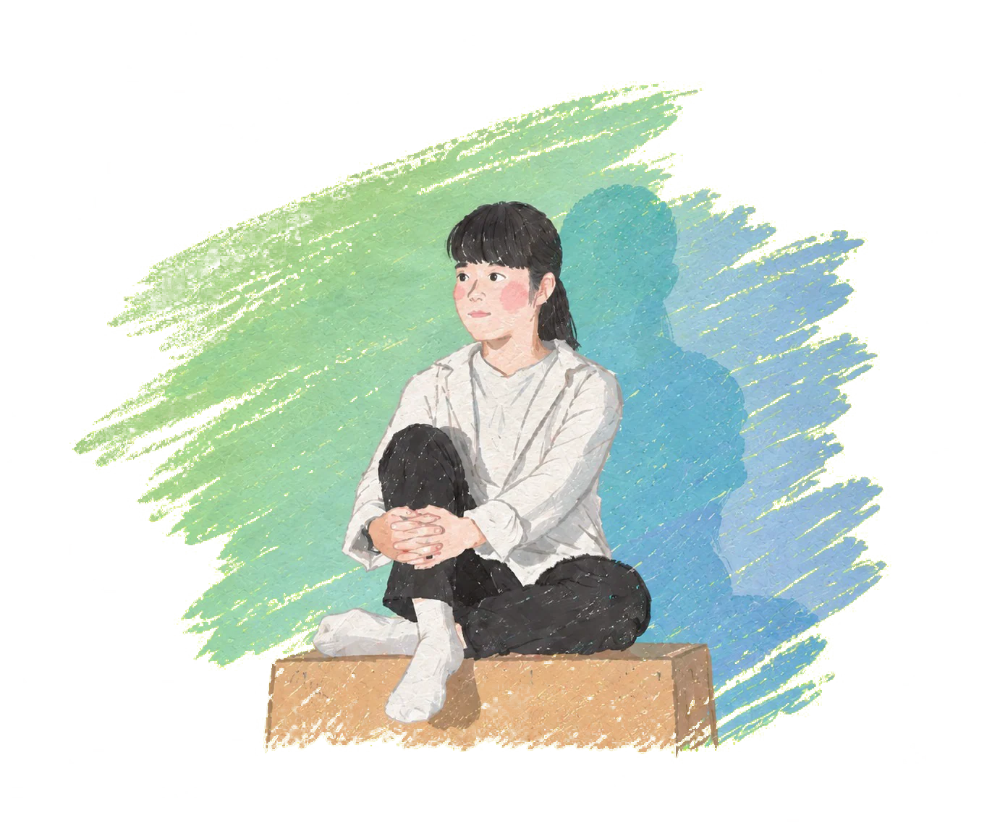
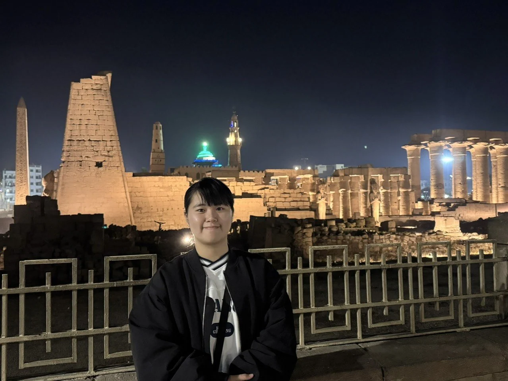
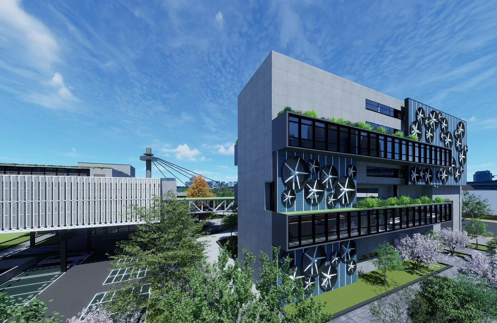
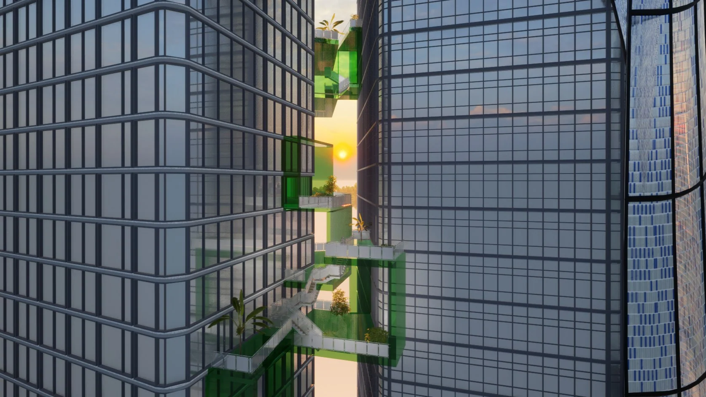
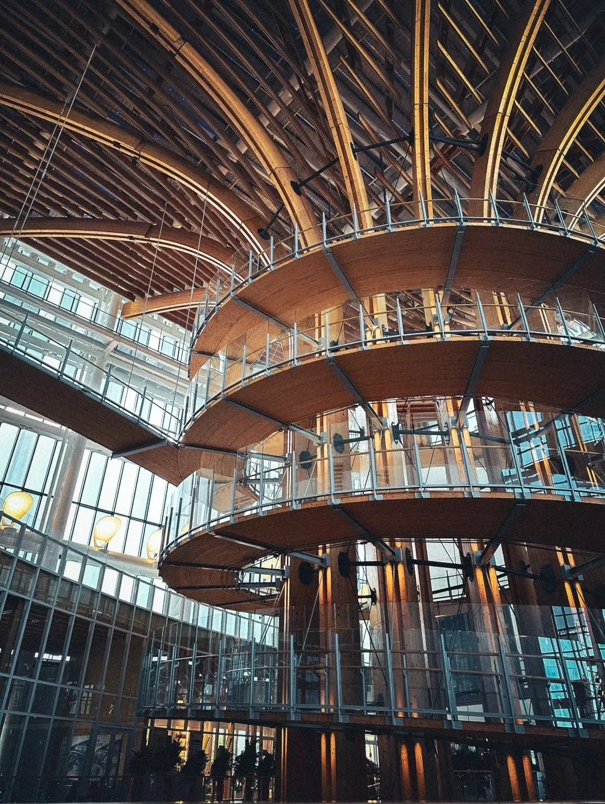
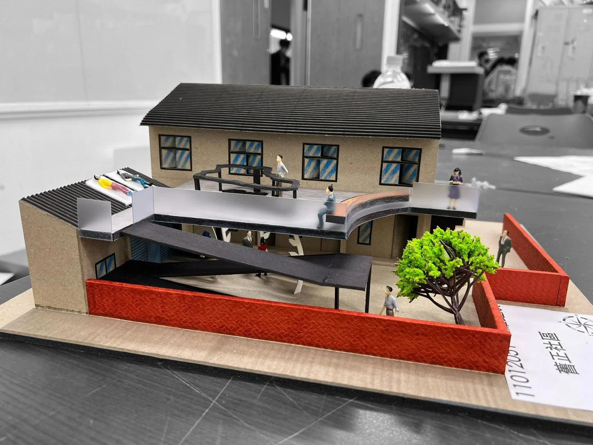

Portf✦olio
2024–2026 ✦ LO YU HSIN ✦ NTUST M.ARCH
SUSTAINABLE ARCHITECTURE: CO-EXISTENCE BETWEEN HUMANITY & ENVIRONMENT
About Me Spatial & Architectural Observer
M.Arch at National Taiwan University of Science and Technology (2025–NOW) B.Arch at Chaoyang University of Technology (2021–2025)
I am currently studying architecture at the National Taiwan University of Science and Technology and graduated from the Department of Architecture at Chaoyang University of Technology. My design work includes renewable energy facilities, adaptive reuse, a park parking-area redevelopment proposal, and a corporate headquarters. I also explore spatial representation through models, photography, and drawing.
View Full Profile →
Design Projects

Green Energy Research Center — Renewable Energy Research and Applications
A renewable energy research and public exhibition center near Taichung Port, integrating research, workspace, and experiential education.
View project details →
Time-Space Station — Dali Tobacco Plant
An adaptive reuse proposal for the historical Taichung Tobacco Plant. Inspired by Dali’s historical name "Dali-Yi" (wooden mooring stakes).
View project details →
Breathing Coastline — Anping Vision Pavilion
Located at Lin Mo-Niang Park by Anping Harbor, Tainan. Elevated ground-floor brick arches capture sea breezes into a central thermal chimney atrium.
View project details →
The Bright Future — Unilever Headquarters
A 3-person collaborative corporate headquarters in Taichung. Massing is split along solar trajectories into twin towers linked by cantilevered Green Boxes.
View project details →
Other Works
Architectural models, drawings, sports and travel observations.
Explore collection →